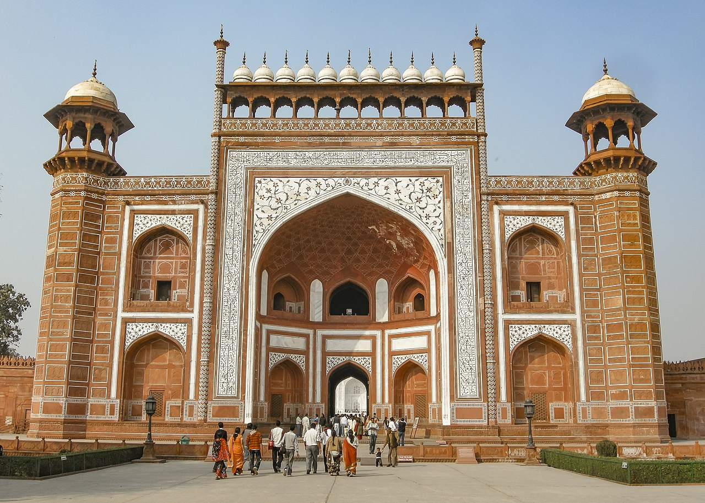
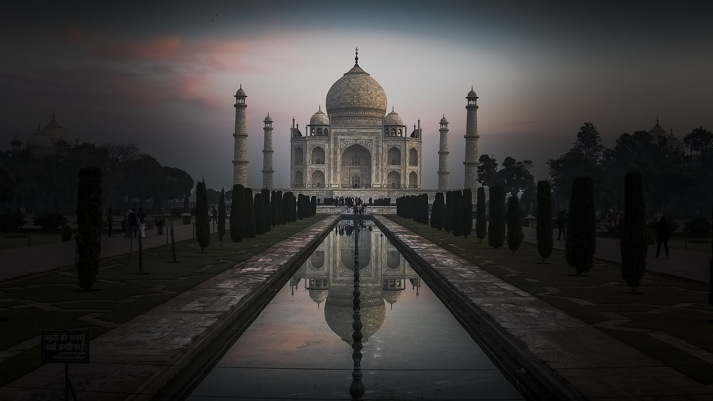

TajMahal
Inspiration
The Taj Mahal was commissioned by Shah Jahan in 1631, to be built in the memory of his wife Mumtaz Mahal, who died on 17 June that year, while giving birth to their 14th child, Gauhara Begum.[14][15] Construction started in 1632,[16] and the mausoleum was completed in 1648, while the surrounding buildings and garden were finished five years later.
The imperial court documenting Shah Jahan's grief after the death of Mumtaz Mahal illustrates the love story held as the inspiration for the Taj Mahal.[18] According to contemporary historians Muhammad Amin Qazvini, Abdul Hamid Lahori and Muhammad Saleh Kamboh, he did not show the same level of affection to others as he had shown her while she was alive. He avoided royal affairs for a week due to his grief, along with giving up listening to music and dressing lavishly for two years. Shah Jahan was enamored by the beauty of the land at the south side of Agra on which a mansion belonging to Raja Jai Singh I stood. This place was chosen for the construction of Mumtaz's tomb by Shah Jahan and Jai Singh agreed to donate it to the empero
Architecture and design
The Taj Mahal incorporates and expands on design traditions of Indo-Islamic and earlier Mughal architecture. Specific inspiration came from successful Timurid and Mughal buildings including the Gur-e Amir (the tomb of Timur, progenitor of the Mughal dynasty, in Samarkand),[20] Humayun's Tomb which inspired the Charbagh gardens and hasht-behesht (architecture) plan of the site, Itmad-Ud-Daulah's Tomb (sometimes called the Baby Taj), and Shah Jahan's own Jama Masjid in Delhi. While earlier Mughal buildings were primarily constructed of red sandstone, Shah Jahan promoted the use of white marble inlaid with semi-precious stones. Buildings under his patronage reached new levels of refinement.[21]
Tomp
The tomb is the central focus of the entire complex of the Taj Mahal. It is a large, white marble structure standing on a square plinth and consists of a symmetrical building with an iwan (an arch-shaped doorway) topped by a large dome and finial. Like most Mughal tombs, the basic elements are Indo-Islamic in origin
tajmahal gallery
list of galleries


numbers
- sunday
- wednesday
- tuesday
- monday
- thursday
- saturday
- friday
sunday
wednesday
tuesday
monday
thursday
saturday
friday